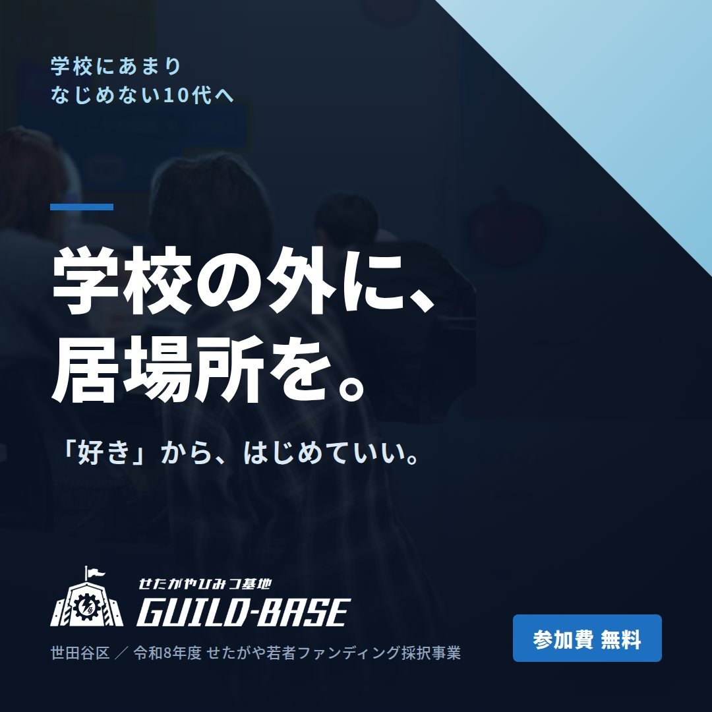
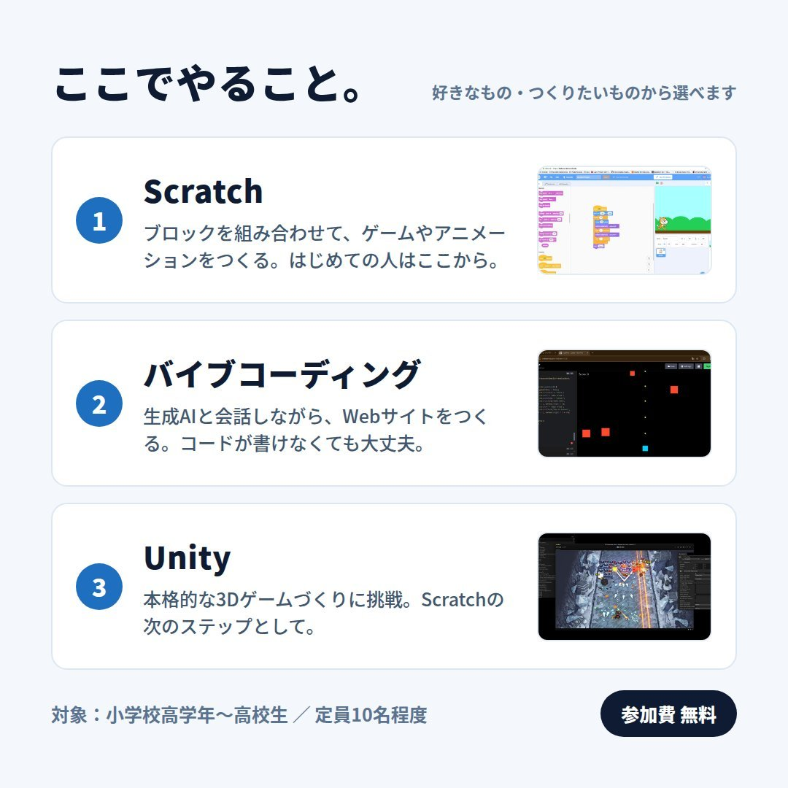
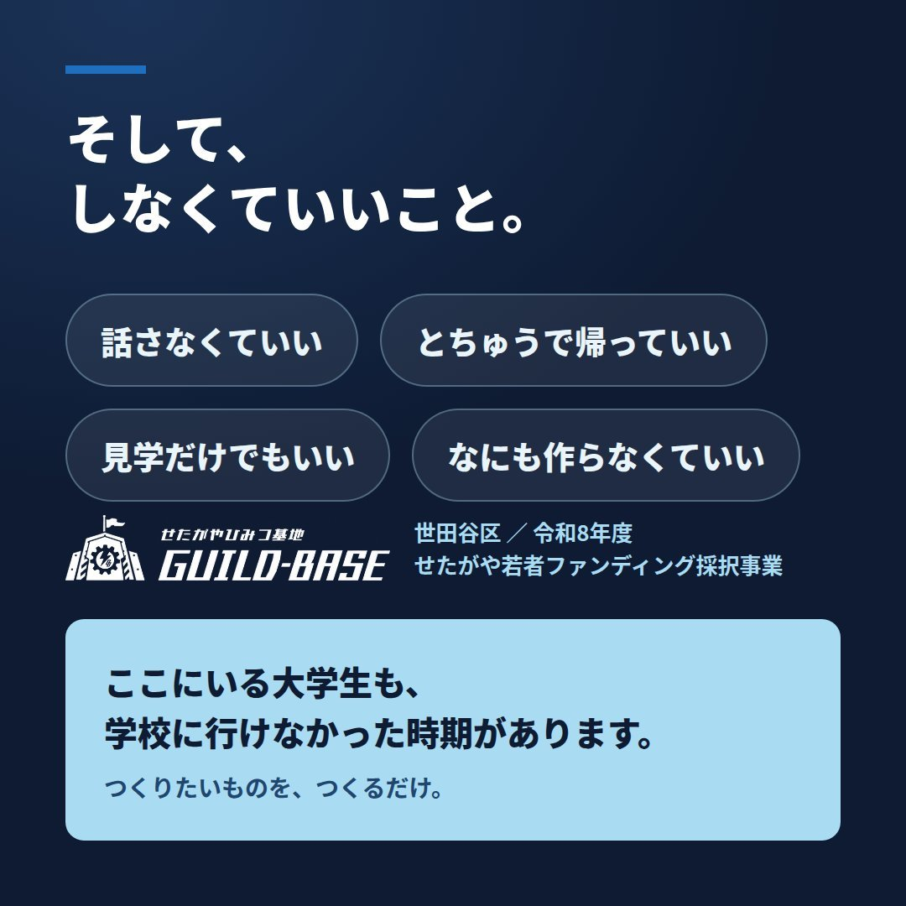
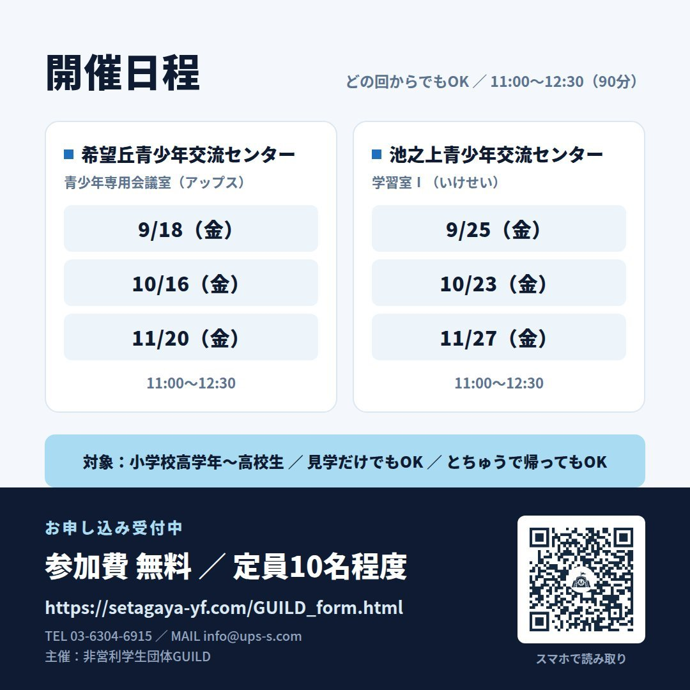

告知
2026.11.03
「せたがやひみつ基地 GUILD-BASE」がスタートします

非営利学生団体GUILDは、世田谷区の「令和8年度せたがや若者ファンディング」採択事業として、10代のための居場所づくりプログラム「せたがやひみつ基地 GUILD-BASE（ギルドベース）」を開始いたしました。
本プログラムは、「学校にあまりなじめない」「家や学校以外に、ほっとできる場所がほしい」と感じている10代の方に向けた、クリエイティブな居場所です。学校の外に、自分の居場所を。「好き」から、はじめていい——興味のあることから、無理なくご参加いただけます。

【ここでやること】
好きなもの・つくりたいものからお選びいただけます。
1. Scratch
ブロックを組み合わせて、ゲームやアニメーションを制作します。初めての方には、まずこちらがおすすめです。
2. バイブコーディング
生成AIと対話しながら、Webサイトを制作します。コードを書く経験がなくても問題ありません。
3. Unity
本格的な3Dゲーム制作に挑戦します。Scratchの次のステップとしてご参加いただけます。

【安心してご参加いただくために】
・話さなくても構いません
・途中で帰っていただいても構いません
・見学だけの参加も可能です
・何も作らなくても構いません
運営にあたる大学生メンバーの中にも、学校に行けなかった時期を経験した者がおります。「つくりたいものを、つくるだけ。」どうぞ安心してお越しください。

【開催日程・会場】
いずれも11:00〜12:30（90分）で、どの回からでもご参加いただけます。
■ 希望丘青少年交流センター（アップス）青少年専用会議室
9月18日（金）／10月16日（金）／11月20日（金）
■ 池之上青少年交流センター（いけせい）学習室I
9月25日（金）／10月23日（金）／11月27日（金）
※9月・10月の回は終了いたしました。11月20日（金）・11月27日（金）の回につきましては、現在参加申込を受け付けております。
【対象・定員・参加費】
対象：小学校高学年〜高校生
定員：各回10名程度
参加費：無料
【お申し込み・お問い合わせ】
お申し込みは申込フォーム（setagaya-yf.com）より受け付けております。
TEL：03-6304-6915
MAIL：info@ups-s.com
主催：非営利学生団体GUILD
※本事業は、世田谷区「令和8年度せたがや若者ファンディング」の採択事業です。